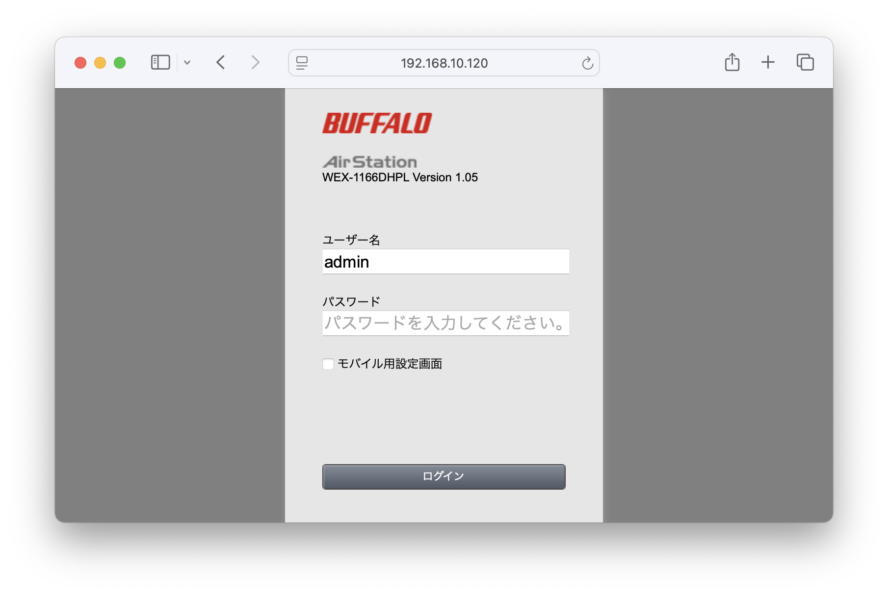
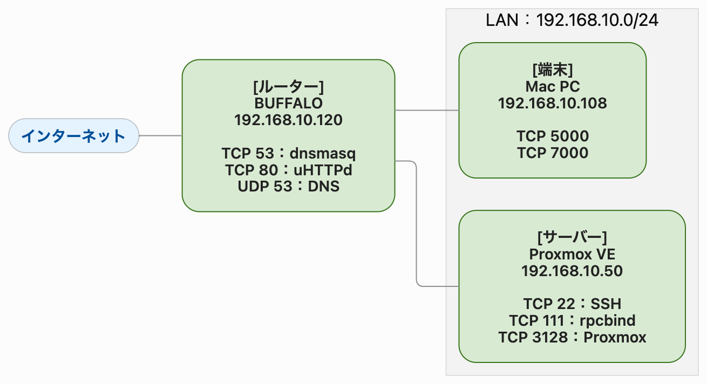

SECURITY POST
Nmap
ネットワーク調査(mac編)
ツールを使ったネットワーク構成の調査
SECURITY POST BY KOZ
Last update: 2026/10/26
SECURITY POST
ネットワーク調査(mac編)
ツールを使ったネットワーク構成の調査
自宅の環境でNmapを動かしてみよう
自宅のネットワークには、PC、ルーター、IoT等のさまざまな機器が接続されています。今回は、ネットワーク調査ツールのNmapを使って、自宅のネットワークを調査します。ホスト探索からポートスキャン、サービスの特定までを実践し、最後にネットワーク図にまとめます。
Movi
社長
社員
ネットワークの範囲を確認し、稼働している機器を探す
Nmapは、ネットワーク上のホスト探索やポートスキャン、サービスの特定などに利用できるツールです。MacではHomebrewを使ってインストールできます。
最初に、自分のMacに設定されているIPアドレスとサブネットマスクを確認します。
サブネットマスクの 0xffffff00 は、10進数では 255.255.255.0 です。今回は、このネットワーク内のIPアドレスを調査します。
-sn は、ポートスキャンを行わずにホストの稼働状況を調べるオプションです。
実行すると、約22秒で次の4つのIPアドレスが検出されました。
社員
Movi
pingオプション-c：pingを飛ばす回数
pingオプション-W：応答を待つ時間。数値を下げすぎると応答前に不稼働だと誤判定する
この処理ではpingを255台分繰り返すので、少なくとも255秒（約4分）掛かってしまいます
開いているポートから、機器が提供するサービスを把握する
ホストが見つかったら、次はどのようなサービスが稼働しているのか調べます。今回はProxmox VE（オープンソースのサーバー仮想化プラットフォーム）が稼働している 192.168.10.50 を対象にします。
対象機器は、ポート22番、111番、3128番がopenであることがわかりました。また、3128番ポートではProxmoxに関連するサービスを示す情報が得られました。
-oN を指定すると結果をファイルに保存できます。この例では、実行したディレクトリに scan.txt が生成されます。同じ条件で定期的に調査し、以前の結果と比較すれば、新しく開いたポートやサービスの変化に気づく手掛かりになります。
サービス、OS、メーカー情報を組み合わせて機器の正体を探る
次に、もう1台の機器 192.168.10.120 を調べます。
53番ポートではdnsmasq、80番ポートではOpenWrtのuHTTPdが検出されました。dnsmasqはDNSなどの機能を提供するソフトウェア、uHTTPdはWebサーバーです。
OpenWrtは、ルーターなどのネットワーク機器に使われるLinuxベースのOSです。ネットワーク機器である可能性が高そうです。
社員
社長
社員
Movi
-O は、ネットワーク応答などをもとにOSを推定するオプションです。
結果には、BUFFALOのMACアドレス情報や、Wireless Access Point（WAP）という機器種別、Linux系OSの推定情報が含まれていました。
MACアドレスの先頭部分は、メーカーを推定する手掛かりになります。ただし、近年はランダムMACアドレスやローカル管理アドレスが使われている場合があり、この情報だけでメーカーを断定できないこともあります。
curl を使ってWebサーバーの応答を確認します。-I は、本文を取得せずにHTTPヘッダーを確認する方法です。
200 が返ってきたため、HTTPリクエストに正常な応答があることを確認できました。
Last-Modifiedは、取得対象のページの最終更新日時を示します。機器のファームウェア更新日時とは限らないため、これだけで機器が更新されていないとは判断できません。

最後にブラウザーからアクセスし、管理画面を目視しました。実際の画面も確認することで、間違いなくBUFFALOのWi-Fi機器であることを確認できました。
見慣れないポートやMACアドレスを、すぐに不審と判断しない
今度は自分のMac（192.168.10.108）を調べてみます。
5000番と7000番のTCPポートが開いており、NmapはRTSP(Real Time Streaming Protocol)関連のサービスとして推定しました。監視カメラ等で使われる映像ストリーミングのプロトコルのようです。ただし、サービス名だけでは実際の用途を断定できません。
webで調べたところ、AirTunes というAirPlay（画面ミラーリング）等の機能に関係するサービスでこれらのポートが使われることが判明しました。
社員
社長
Movi
社員
調査結果を見える形にして、機器の構成と役割を整理する
各機器のIPアドレスやサービス情報を確認できたので、ネットワーク図にまとめます。機器の配置と通信上の情報を一枚に整理すると、ネットワーク全体の構成を把握しやすくなります。

今回の調査では、ホスト探索によって4つのIPアドレスを検出し、そのうち3台についてサービス情報を調べました。Nmapの結果を管理台帳と照合すれば、把握していない機器や、想定していないポートの存在に気づくきっかけになります。
Movi
今回、Nmapを使って自宅のネットワークを調査しました。ホスト探索で稼働中の機器を見つけ、ポートスキャンとサービス検出によって、各機器で応答しているサービスを調べました。
調査で得られる情報は、あくまで機器やサービスを特定するための手掛かりです。Nmapの推定結果だけで断定せず、実際の応答や管理台帳などと照合することが重要です。
nmap -sV <IPアドレス>
sudo nmap -O <IPアドレス>
nmap -sV -oN <ファイル名> <IPアドレス>